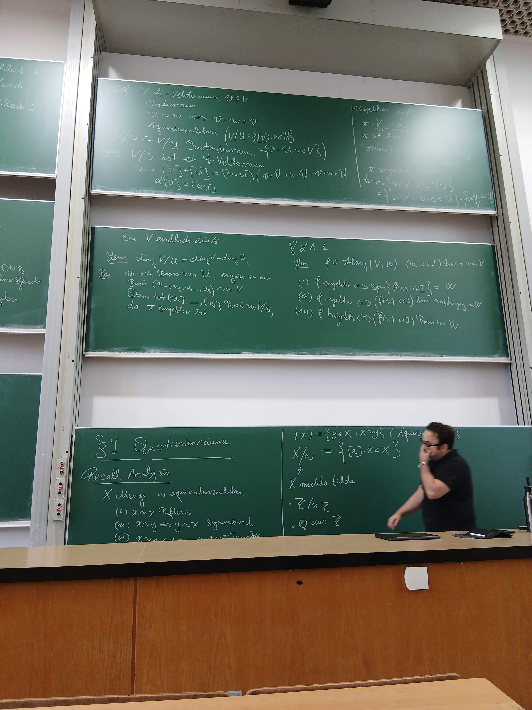

Berk Oytun Bozoğlu
Department of Mathematics
University of Bonn
berk.bozoglu AT uni-bonn.de
About
I am a mathematics student at the University of Bonn. My interest lies in Arithmetic Geometry. In my free time I like to play the drums and go climbing.